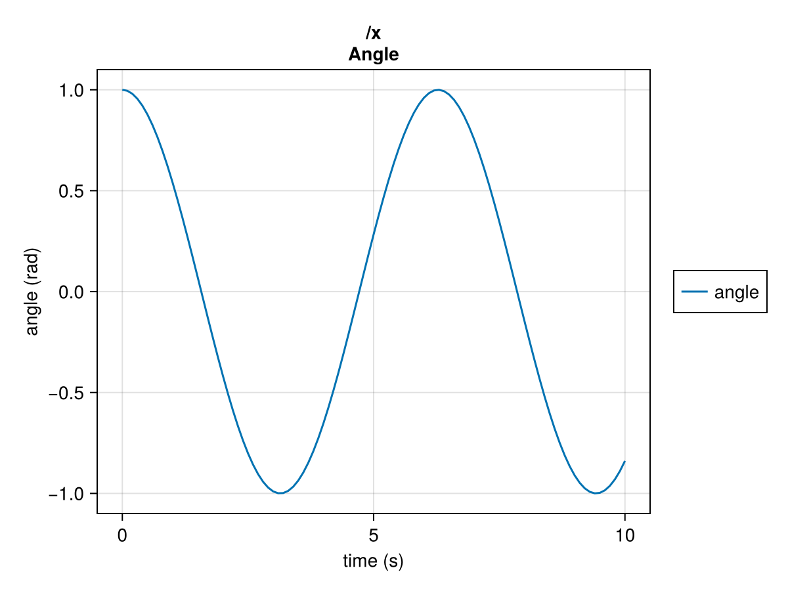

SystemsOfSystems Documentation
SystemsOfSystems is a simulation engine for models that contain models that contain models, etc., where each model can have both continuous and discrete dynamics, outputs, and random variables. Given a top-level model and its dynamics, SystemsOfSystems will simulate it (and its sub-models) over time, producing a time history of states and outputs for all models. Further, the simulation engine allows different solvers, methods for logging and sub-sampling the data, and "hooks" into the simulation loop for integrating processes outside of the models, like showing a progress bar.
Models
A model is made up of the following kinds of things:
- constants
- continuous states
- continuous random variables
- discrete states
- discrete random variables
- schedules (when the model wants a discrete step)
- resources (like open files that must be closed at the end of the simulation)
- models
A model is expected to have three key functions:
- an initialization function that describes the model
- a continuous dynamics function that returns the derivatives of the continuous states, as well as any continuous outputs, plus the results of its sub-models' continuous dynamics
- a discrete dynamics function that returns updates to the discrete states, as well as any discrete outputs, plus the results of its sub-models' discrete dynamics
A model can be any type, or even no type at all (it will default to a named tuple). Models are never mutated in SystemsOfSystems and should not mutate themselves. Rather, they are always constructed "fresh" from their constants, states, random variables, etc.
Simulation
Simulation of a model is easy:
using SystemsOfSystems
history = simulate(
user_data;
t = (0, 10),
init_fcn = my_init_fcn,
rates_fcn = my_rates_fcn,
updates_fcn = my_updates_fcn,
options = SimOptions(; ... ),
)The returned history contains the time histories of all models, the simulation's start and stop times, the final model, and why the simulation stopped.
Accessing those time histories looks like this:
history["/model/submodel/subsubmodel"]["position"]This would return a TimeSeries for the position state of the "/model/submodel/subsubmodel" model. We could plot that or access its (time, data) pairs, etc.
The time and model at the end of the simulation are available as history.t_stop and history.model. The stop time will ordinarily be the final requested t, but it can be earlier if the simulation stops early.
Example
Here is an extremely simple simulation of a continuous-time process defined by $\ddot{x} = -x$.
using SystemsOfSystems
# This describes our model with its initial state. We don't need the
# initial time, user_data, or seed that the simulation provides.
function my_init_fcn(t, user_data, seed)
return ModelDescription(;
continuous_states = (;
x = VariableDescription(
1.;
title = "Angle",
dimensions = ["angle" => "rad"],
),
x_dot = VariableDescription(
0.;
title = "Angular Rate",
dimensions = ["rate" => "rad/s"],
),
),
)
end
# This describes the derivatives of each part of the state. Because of our
# model description above, `model` here will contain a field for `x` and
# a field for `x_dot` and nothing else.
function my_rates_fcn(t, model)
return RatesOutput(;
rates = (; # Contains the derivative of each state
x = model.x_dot,
x_dot = -model.x,
),
)
end
# Here, we run a simulation for 10s (the time unit is arbitrary).
history = simulate(
nothing; # This is the "user data" passed to the init_fcn (we don't use it).
t = 0 : 0.1 : 10,
init_fcn = my_init_fcn,
rates_fcn = my_rates_fcn,
)
historySimulation History:
Stop Reason: The sim reached the specified end time of 10.0.
Model Histories:
/
Now, we can look at the histories that were generated. Here are the time histories available in the "root" model, which is the only model in this example:
history["/"]ModelHistory for / with the following contents:
type: Nothing
continuous_states:
x => TimeSeries{Vector{Float64}, Vector{Float64}, LinearInterpolation}
x_dot => TimeSeries{Vector{Float64}, Vector{Float64}, LinearInterpolation}
We can select its time series for x.
history["/"]["x"]101-element TimeSeries of Float64 elements
title: Angle
time: Float64[0.0, ... 10.0]
data: Float64[1.0, ... -0.8390715034469644]
time_dimension: "time" => "s"
dimensions:
1: "angle" => "rad"
path: /x
discrete: false
interpolator: LinearInterpolation
groups:
angle: ["angle"]
SystemsOfSystems exports a plot_ts function. It requires a Makie backend to actually plot it. We'll use CairoMakie for the static images in this online documentation. GLMakie is an excellent choice when working interactively.
using CairoMakie # For the plot
plot_ts(history["/"]["x"])
This is only the simplest possible demo. See the Control System Example for examples of discrete states, nested models, outputs, and random variables.
Options
The simulation has many different kinds of options. The simulate function accepts an options keyword that should be a SimOptions. All of the fields of SimOptions have defaults, but here's an example of setting everything:
simulate(
...;
options = SimOptions(;
# If your model generates an output file, it goes in the outdir.
outdir = "/path/to/my/outputs",
# We can add as many hooks as we like.
hooks = [
Hooks.ProgressBarOptions(),
],
# Let's specify a fixed-step solver.
solver = Solvers.RungeKutta4Options(; dt = 0.1),
# We almost always want a "basic" log, but we can add a lot of options
# to a basic log (see logging policies, below).
log = Logs.BasicLogOptions(),
# The time dimension is only used for the x-axis of generated plots.
# It has nothing to do with how the sim runs.
time_dimension = "Time" => "s",
),
...
)Each of those modules is introduced below.
Solvers
The following solvers exist today:
RungeKutta4Options: 4th-order Runge-Kutta method, useful when the user can directly provide a step size that will work throughout the simulationDormandPrince54Options: Dormand-Prince 5th-order adaptive-step method with a 4th-order embedded solution for step size control, useful when the step size needs to vary during the simulation automatically
Users can implement their own solvers according to the solver interface, and more solvers will be available soon.
Hooks
The simulation has an option to "hook into" its loop. It exports a Hooks module with the following built-in hook types.
ProgressBarOptions: Configures a hook to display a progress bar in stdoutSimTimeoutOptions: Configures a hook to end the sim after a certain real-world timeout (useful if something is hanging)ClockSyncOptions: Configures a hook to synchronize the loop with soft real-time using the system clock
Users can implement their own hooks according to the hook interface.
Logs
There are three types of logs today:
BasicLogOptions: Logs states and outputs in regular Julia arrays. By default, everything is logged.NullLogOptions: Logs nothing. This is good for speed when all that's needed from the sim is the final state of the models.HDF5LogOptions: Logs directly to an HDF5 file on disk. This is much slower than logging to RAM, but it enables a sim to run for an extremely long time without using too much RAM. It still allows a user to interact with the resulting log as if the arrays were in RAM (the way you use the returned history is unchanged).
LoggingPolicies
Logging policies provide a way to control which variables of which models get logged and when. This becomes useful as the tree of models becomes very large, and models mix many different levels of dynamics (some very fast, some slow). We can save runtime, RAM, and disk space (if we save the log to disk) by controlling the logging policies.